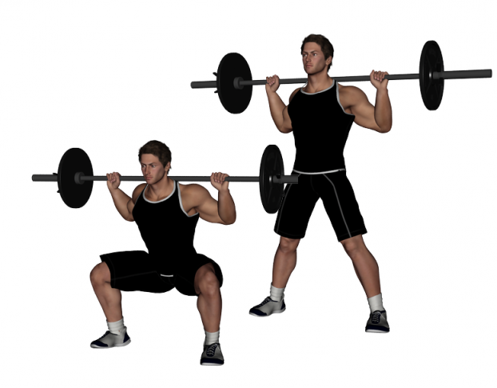
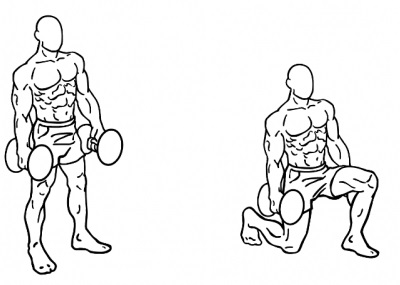
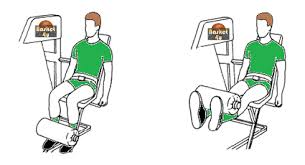

Le squat n'est pas un exercice a sous estimer pour bien développer ses quadriceps. Même si le squat est une exercice apportant de nombreux bénéfices, une forme correcte est absolument cruciale. Il y a plusieurs facteur a considérer: des facteurs physiologiques comme la longueur des os vont changer la technique du squat parfait, ou encore la mobilité et la souplesse des muscles et articulations doivent être suffisantes pour effectuer un geste correcte avec un maximum de résultats.
Les fentes avant sont un exercice très polyvalent, celle ci peuvent être performées avec un haltère dans chaque main ou une barre sur le dos comme le squat. Cet éxercice travaille très bien le quadriceps mais egalement les fessiers, plus l'écartement des jambes est important lors de l'éxecution de ce mouvement, plus les fessiers et ischio jambiers sont solicités egalement et inversement plus l'écartement est faible plus les quadriceps travaillerons.
Le leg extension est un exercice qui permet de faire travailler les muscles à l'avant de la cuisse, c'est a dire les quadriceps, il ne vaut pas les squats mai permet de travailler les quadri sans soliciter les fessiers et le dos, par contre il impose un gros stress au niveau du genou et donc ne convient pas au personnes ayant un probleme aux articulations de cet endroit.